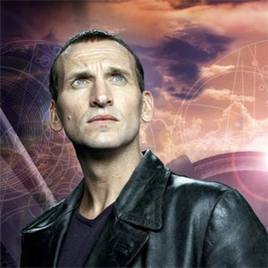

| Home, The Doctors, Companions, Villains | |||||||||||||
 |
|||||||||||||
|
The Ninth DoctorChristopher EcclestonThe Ninth Doctor is the ninth incarnation of the protagonist of the long-running BBC television science fiction series Doctor Who. He is portrayed by Christopher Eccleston during the first series of the show's revival in 2005. Within the series' narrative, the Doctor is a time travelling, humanoid alien from a race known as the Time Lords. When the Doctor is critically injured, he can regenerate his body but in doing so gains a new physical appearance and with it, a distinct new personality. he production team's approach to the character and Eccleston's portrayal were highlighted as being intentionally different from his predecessors, with Eccleston stating that his character would be less eccentric. To fit in with a 21st-century audience, the Doctor was given a primary companion who was designed to be as independent and courageous as himself in the form of Rose Tyler. He also briefly travels with Adam Mitchell, a self-serving boy genius who acts as a foil to the companions and ultimately proves unworthy, and Jack Harkness, a reformed con-man from the 51st Century.
|
||||||||||||